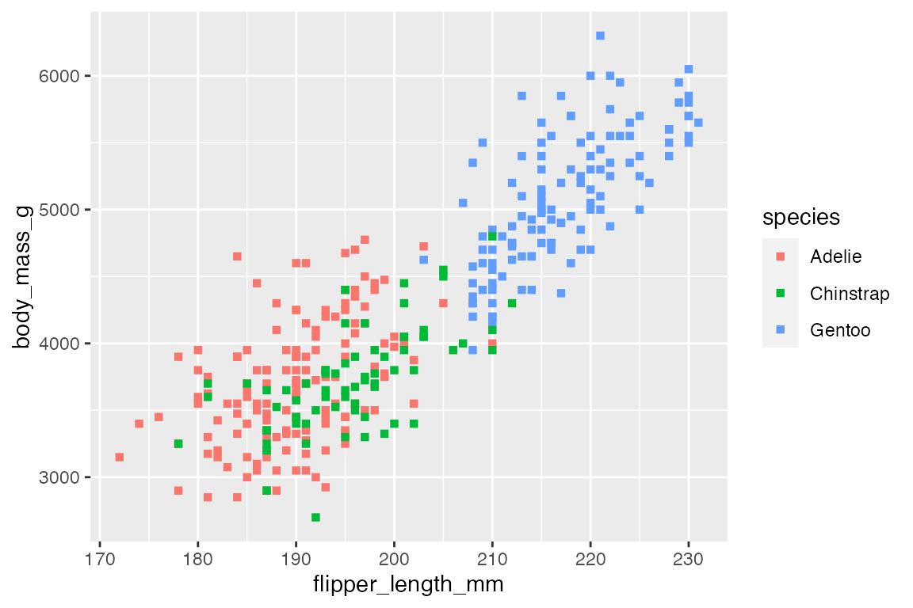
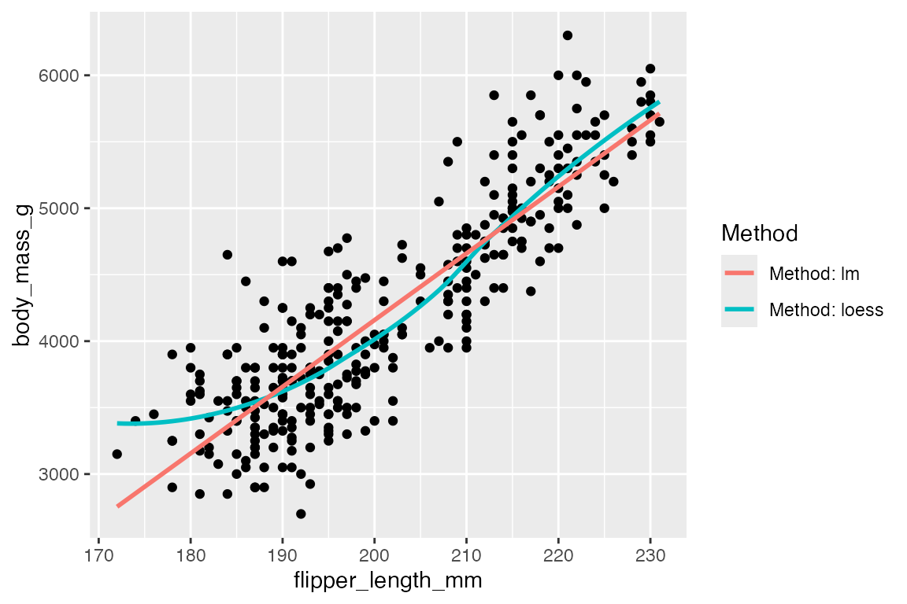

16 Aesthetics
16.1 Resources
16.2 Mapping vs setting aesthetics
Aesthetics define the visual properties of geoms. They can either be mapped to change according to variables in the data or set as a constant value.
-
Map an aesthetic to a variable with
aes():aes(color = species) -
Set an aesthetic outside of
aes()with a constant:color = "blue"
Aesthetics can be mapped for the entire plot (ggplot(aes())) or within each layer (geom_point(aes())). Within each layer you can add, override, or remove mappings.
penguins |>
ggplot(aes(x = flipper_length_mm, y = body_mass_g)) +
geom_point(
aes(color = species), # Map aesthetic
shape = "square" # Set aesthetic
)
16.2.1 Naming layers
An alternative between mapping and setting aesthetics is to name the layers within aes() to distinguish them and create a legend. This is useful when you want to compare multiple layers such as two geom_smooth() layers with different methods.
penguins |>
ggplot(aes(x = flipper_length_mm, y = body_mass_g)) +
geom_point() +
geom_smooth(aes(color = "Method: loess"), method = "loess", se = FALSE) +
geom_smooth(aes(color = "Method: lm"), method = "lm", se = FALSE) +
labs(color = "Method")
#> `geom_smooth()` using formula = 'y ~ x'
#> `geom_smooth()` using formula = 'y ~ x'
16.3 Common aesthetics
The documentation for each geom provides the aesthetics that can be used with it. Common aesthetics include:
- positions:
x,y - colors:
color,fill - shapes:
shape,linetype - size:
size,linewidth - transparency:
alpha - groupings:
group
16.4 Default aesthetics for geoms
Each geom has default aesthetics when drawing the geoms. For a complete list see the table created by Dana Seidel. The gist includes code to create a list and table of the default aesthetics:
geom_names <- apropos("^Geom", ignore.case = FALSE)
geoms <- mget(geom_names, env = asNamespace("ggplot2"))
aes_list <- lapply(geoms, function(x) x$default_aes)The list provides a nice way to look at the default aesthetics, but it is quite long. We can simplify the list to concentrate on aesthetics used for the main types of geoms.
Points
aes_list[c("GeomPoint")]
#> $GeomPoint
#> Aesthetic mapping:
#> * `shape` -> 19
#> * `colour` -> "black"
#> * `size` -> 1.5
#> * `fill` -> NA
#> * `alpha` -> NA
#> * `stroke` -> 0.5Lines
aes_list[c("GeomLine", "GeomSmooth")]
#> $GeomLine
#> Aesthetic mapping:
#> * `colour` -> "black"
#> * `linewidth` -> 0.5
#> * `linetype` -> 1
#> * `alpha` -> NA
#>
#> $GeomSmooth
#> Aesthetic mapping:
#> * `colour` -> "#3366FF"
#> * `fill` -> "grey60"
#> * `linewidth` -> 1
#> * `linetype` -> 1
#> * `weight` -> 1
#> * `alpha` -> 0.4Rectangles
aes_list[c("GeomPolygon", "GeomBar", "GeomBoxplot")]
#> $GeomPolygon
#> Aesthetic mapping:
#> * `colour` -> NA
#> * `fill` -> "grey20"
#> * `linewidth` -> 0.5
#> * `linetype` -> 1
#> * `alpha` -> NA
#> * `subgroup` -> NULL
#>
#> $GeomBar
#> Aesthetic mapping:
#> * `colour` -> NA
#> * `fill` -> "grey35"
#> * `linewidth` -> 0.5
#> * `linetype` -> 1
#> * `alpha` -> NA
#>
#> $GeomBoxplot
#> Aesthetic mapping:
#> * `weight` -> 1
#> * `colour` -> "grey20"
#> * `fill` -> "white"
#> * `size` -> NULL
#> * `alpha` -> NA
#> * `shape` -> 19
#> * `linetype` -> "solid"
#> * `linewidth` -> 0.5Text
aes_list[c("GeomText", "GeomLabel")]
#> $GeomText
#> Aesthetic mapping:
#> * `colour` -> "black"
#> * `size` -> 3.88
#> * `angle` -> 0
#> * `hjust` -> 0.5
#> * `vjust` -> 0.5
#> * `alpha` -> NA
#> * `family` -> ""
#> * `fontface` -> 1
#> * `lineheight` -> 1.2
#>
#> $GeomLabel
#> Aesthetic mapping:
#> * `colour` -> "black"
#> * `fill` -> "white"
#> * `size` -> 3.88
#> * `angle` -> 0
#> * `hjust` -> 0.5
#> * `vjust` -> 0.5
#> * `alpha` -> NA
#> * `family` -> ""
#> * `fontface` -> 1
#> * `lineheight` -> 1.216.5 Color, fill, and alpha
Add color to the geom with either color or fill aesthetics. See Color related aesthetics for more.
-
coloris used withgeom_point(), lines, and the outline of polygon geoms. -
fill“fills” in the color of all polygon geoms.
Colors can be specified with either rbg hex string, color name listed under colors(), or NA for transparent.
alpha: Values of alpha range from 0 to 1, with lower values corresponding to more transparent colors.
16.6 Lines
The appearance of a line is affected by linewidth, linetype, lineend, linejoin. See ggplot2 Aesthetic specifications: Lines
linewidth: used to control the width or size of the line.
Line type
linetype: can be specified with an integer of 0 to 6 or by name:
- 0 = blank
- 1 = solid
- 2 = dashed
- 3 = dotted
- 4 = dotdash
- 5 = longdash
- 6 = twodash
Alternatively, linetype can be created with a string containing 2, 4, 6, or 8 hexadecimal digits that provide lengths of on and off. Thus, "3313" specifies three units on followed by three off followed by one on and finally three off.
Line ends
-
lineendcan be one of"butt"(the default),"round", or"square". -
linejoincan be one of"round"(the default),"mitre", or"bevel".
16.7 Points
Points can be chosen in 5 ways, see the visualization in the Aesthetics vignette:
- An integer: 0 to 25
- Name of the shape
- Single character to use that character as a plotting symbol.
-
.to draw the smallest rectangle that is visible, usually 1 pixel. -
NAto draw nothing
16.8 Grouping
The group aesthetic is by default set to the interaction of all discrete variables in the plot. This default is often good enough, but when it does not work or when there is no discrete variable, you need to explicitly map group to a variable that has a different value for each group. See Aesthetics: grouping.
For most applications the grouping is set implicitly by mapping one or more discrete variables to x, y, color, fill, alpha, shape, size, and/or linetype. The typical case where grouping does not work by default is with geom_line() when only positional aesthetics are set. See Section 14.7 for examples.